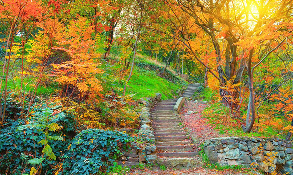

თბილისი
თბილისი საქართველოს დედაქალაქია. მისი ქვაფენილიანი ძველი ქალაქი ასახავს გრძელ, რთულ ისტორიას, სპარსული და რუსული მმართველობის პერიოდებით. მისი მრავალფეროვანი არქიტექტურა მოიცავს აღმოსავლეთის მართლმადიდებლურ ეკლესიებს, მორთულ არტ ნუვოს შენობებს და საბჭოთა მოდერნისტულ სტრუქტურებს.
შეიტყვე მეტისაუკეთესო ტურები

- აქ ნახავთ მრავალფეროვან ვარდნარს, იასამნების კოლექციას
- აქ ფუნქციონირებს კაფე, მუზეუმი და სადღესასწაულო სივრცე

- ძველ თბილისშია თბილისის ღირსშესანიშნაობების უმეტესობა
- ტურისტული მიზიდულობის მთავარი ცენტრი

- გართობისა და დასვენებისათვის საუკეთესო ადგილი თბილისში
- მდებარეობს 770 მეტრის სიმაღლეზე

- სიგრძე — 8,75 კმ, უდიდესი სიგანე 1,85 კმ. ფართობი 11,6 კმ²
- უდიდესი სიღრმე 45 მ. საშუალო სიღრმე 26,6 მ

- მართლმადიდებლური ქრისტიანული ტაძარი საქართველოში
- იგი საქართველოში ყველაზე დიდი ტაძარია

- მდებარეობს ქალაქის ცენტრიდან სამხრეთ-დასავლეთით
- დასვენებისა და გართობის ერთ-ერთი პოპულარული ადგილი

- რიყის პარკი თბილისის გულში მდებარეობს
- პარკი მდებარეობს მდინარე მტკვრის მარცხენა სანაპიროზე

- დედაქალაქის ერთ-ერთი ყველაზე მასშტაბური სავაჭრო ცენტრი
- ისთ ფოინთი ქალაქის უკიდურეს აღმოსავლეთშია
გალერეა